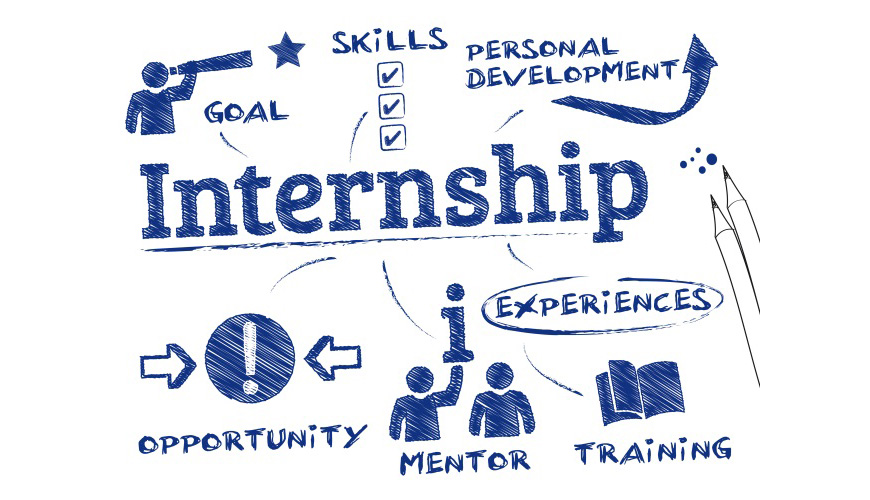
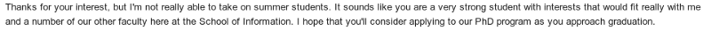
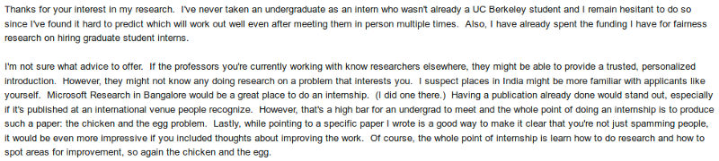

The Internship Trauma

Internship is one of the most popular buzzwords right now. Every year, hundreds of people are willing to invest a significant portion of their lives in working for somebody else for a short duration in return for a stipend, recommendation, research/industrial experience or some just for the sake of it. This post is not about how to get an internship; instead, this is my story about how I tried to get an internship but could not secure it despite repeated attempts. I feel that there are many posts which speak about failure or depression after they have reached the success that they were long craving for or after they have come out of depression. For example, posts saying “hang in there” after they have got admit from somewhere or job/internship from a reputed company. However, there are very few posts which discuss the psyche of a person who has tried and has failed in his/her endeavour. This is one such attempt to discuss an unhappy ending because all stories don’t have happy endings. If you think that this post is long by seeing the time preview that all Medium articles have, I have one thing to say; life is full of long and often painful thoughts about your successes and failures.
To start with I would like to introduce my background, so the stakes are set clear enough. I am a third-year undergraduate in the department of Computer Science And Engineering, IIT Kharagpur. I want to pursue higher studies after my graduation(preferably a PhD). Hence, I have been trying to do a research internship in the summers of 2019. To put things in perspective, in our third year we have to do a compulsory internship during the summer vacation. Students have an option to sit for the CDC(Career Development Centre) which handles the internship/placement process of the institute. However, most of the companies that offer internships through CDC are open for Software Development Profile and not for research profiles. And also CDC as of now does not call Universities for internships. So I decided not to sit in CDC as I was more interested in a research internship. This decision was incessantly questioned by a lot of people who were perplexed and advised me to sit in CDC as it is easy to an get an internship through CDC. However, I was reluctant and backed my decision thinking why I should try for something in which I am not interested at all. All of this happened in August 2018.
So I started my internship applications by mailing professors. I had a bit of experience in this regard from my previous year. So I updated my Curriculum Vitae(CV) and Cover Letter, reviewed it from some of my friends and BINGO, I started searching for Professors with similar interests in Universities(mostly abroad). In the meantime, I was working a Project with my friend on “Discovery and Mitigation of Algorithmic Bias using Layerwise Relevance Propagation” (which I had started from the summers of 2018). Our plan was to try for a short paper(Student Abstract Paper -2 Pages) submission at AAAI(Association for the Advancement of Artificial Intelligence), 2019 whose deadline was September 22, 2018. We had achieved good results in our work(at least we thought so). This was very crucial for me as it would have been very easy for me to get an internship if I had a paper accepted at such a significant conference like AAAI. Even though it was a Student Paper, it would have come in the proceedings of the conference. However, two days before the submission we found a bug in our code which was the reason for our good results. After removing the bug, the results obtained did not support our hypothesis, and hence we could not carry on with our project idea. This was the first significant setback that I had as not only we missed the conference deadline but also he had serious doubts as to the novelty of our idea. Lessons learned from this experience:-
1. In research works always be sceptical about your results.
2. Be ready to accept that your idea might not be feasible and it is not always possible to achieve considerable results with it.
Even though I had learnt my lessons, I knew it would become really tough for me to get an internship as I had no paper accepted. Nevertheless, I came out of that phase and tried my best to search for various opportunities.
I treid in some programs like :-
1. Mitacs Globalink Internship (Canada)
2. DAAD Fellowship (Germany)
For DAAD Fellowship I had to mail Professors in Germany, and just when I felt that no one would respond, I got a reply from RWTH Aachen one week before the deadline of DAAD. Since the deadline was very close, I had put a lot of effort into having the documents signed and collecting Letter Of Recommendations. Unfortunately, that was the busiest week for me in terms of academics as there were three tests and two assignments in that week. Nevertheless, I survived that week and sent my application to the DAAD office in New Delhi. To be frank, I was pretty confident that I will get DAAD fellowship. Now the date was November 5, 2018. I was still mailing professors in foreign universities after this. My End semester happened between November 18–26, 2018. After that, during the winters I started working on a Project “Election Optimization In Recommendation Fairness” and also rigorously mailed profs (now mostly in US universities). Some people might call it spamming, but I mailed only those who worked in fields I had worked previously and read at least the abstract of their papers before mailing them. I received a lot of negative replies which would sometimes dishearten me and also encourage me at the same time. To give you a flavour of what kind of replies I received I have shared some replies:-


Again just when I was feeling this effort was bearing no fruit, a professor from UCLA agreed to send me an invitation letter for IIT Kharagpur Foundation of USA Scholarship(IIT-KGPF) whose deadline was January 4, 2019. I applied for that scholarship on 26th December and the time between 26th December to January 9th were the happiest days for me during the past year. However, it all came to an end when I heard that people have started getting acceptance mails for DAAD fellowship on 9th and I had not received any mail. I really had a hard time coming out of that phase and found solace in the fact that there might be a second round for DAAD. Meanwhile, I resumed my mailing procedure. On January 17th I received two emails one being a positive reply from a Professor from KU Leuven and other one being from Mitacs informing me that my status was updated from Waitlist to Candidate Under Consideration. That day I felt I would get at some place or the other. Just then (after about 5–6 days) I received a final rejection mail from DAAD. I somehow left that behind me and moved on. Now, my real hopes were IIT-KGPF, Mitacs and KU Leuven. I appeared for an interview that was taken by a prof from Canada through Mitacs. The interview went so-so, and I had no particular expectation from Mitacs. In the meantime, I heard that KGPF results would come around mid-Feb. So the wait continued for me. By then, I had decided if nothing works for me I would try to collect funds from personal sources and try to go to UCLA. However later I came to know that for J-1 visa the DS-2019 form is required to be issued by the host university and UCLA has the requirement that for DS-2019 “ visiting undergraduate students must have a ‘substantial’ portion (at least 51%) of their funding coming from a source other than personal or family funds. Such funds may be identified as a scholarship, fellowship, or a grant/award from another organization”. My dreams were thrashed as even if I try to collect funds for the stay in UCLA I won’t be able to secure the visa and hence KGPF was my de-facto option left. With each passing day, my anxiety levels would swing like a sine-curve peaking at some times while reassuring during the other. Come mid-Feb the buzz was that KGPF results would come around the end of Feb. However, to my abysmal shock the deadline for the KGPF application was extended to March 3, 2019. This announcement was totally unexpected, and I did not know how to react to it. Late results meant more waiting, and now even if I get selected for KGPF, it would become challenging to obtain the documents for J-1 Visa. I still waited. Now coming to Mitacs, the official website had announced that the results to be declared by Feb 2019. However, even by late Feb it had not been declared. This was really frustrating. Also, the Prof from KU Leuven had not responded to me ever since. In this scenario just when I was gathering my thoughts to write this post, I received a rejection mail from Mitacs. This was like the “final nail in the coffin” for me as I have no other backup after this rejection. As of writing this post, I am not sure what to do during my summers, and most probably I will spend it here in KGP working on a project which I have taken this semester.
In the meanwhile, almost all of my friends have got offers from places like MIT, Georgia Tech, EPFL, CMU, INRIA, Amazon Robotics etc and some of them also have got Mitacs and DAAD scholarships. My experiences with dealing with my failures and other people’s success have been sweet and bitter. At first I would feel good for them and that thought would fade away into an aura of thoughts about my status and why nothing substantial has happened to me. Whenever I would get reminded of this, I would cry to my heart’s content and various thoughts go through my mind during this period. Maybe I am a loser who is thinking too hard about life. Maybe I don’t deserve the internship that I aspire for. Maybe not getting an internship makes me special and different from others who have achieved success. I don’t know, and I can never be sure about it. After some time, I leave these thoughts behind, I wipe my tears and carry on with my work. Then again the next day I go through this same process. One thing I know for sure is that I will come out of this one day and I just need to give myself time to heal right now.
If you have made this far, you might as well think that I could have tried a bit more or tried in the right direction. Yeah true. Even I think I could have applied in some more programs or could have started my projects earlier so that I might have had a paper earlier. However, these are all ifs and buts and dos and don’ts, whereas life is a vicious cycle of actions and consequences with one leading to another. You have no other way but to accept the consequences of your actions and move on. Moreover, for me like all other things, I will try my best to make PEACE with my situation and move on.
Have a nice day. Cheers!